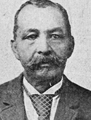

|

|

|
|
|
The son of a free black man from Haiti and an Englishwoman, Richard Howell
Gleaves was born in Philadelphia on Independence Day. He was educated in that
city and in New Orleans and worked as a steward on Mississippi River steamboats.
From the mid-1840s to the mid-1860s, Gleaves lived in Ohio and Pennsylvania. He
was active in the Prince Hall Masons, helping to organize lodges throughout the
North. After the Civil War, Gleaves arrived in Beaufort, South Carolina, entered
into business with Robert Smalls as a factor and merchant, and practiced law. He
helped organize the Union League and Republican party in the state, presiding at
the party's 1867 state convention. According to the 1870 census, he owned $500
in real estate and $600 in personal property.
Gleaves held several offices during Reconstruction, including trial justice,
probate judge, and commissioner of elections, all 1870-72. In 1872, he was
elected the state's lieutenant governor, serving to 1877; he ran unsuccessfully
for reelection in 1876. Gleaves also served as a colonel in the state militia
and was a delegate to the 1876 Republican national convention. Gleaves was
convicted of election fraud in 1870 but was cleared in a second trial.
Democratic governor Wade Hampton appointed Gleaves a trial justice at
Beaufort in 1877, but Gleaves left the state after being indicted for fraudulent
issuance of legislative pay certificates. He returned as a special customs
inspector, 1880-82. Gleaves spent his last years in Washington, D.C., where he
worked as a waiter and steward at the Jefferson Club.
Source: Eric Foner, Freedom's Lawmakers: A Directory of Black
Officeholders during Reconstruction (New York: Oxford University Press,
1993), 87.
|